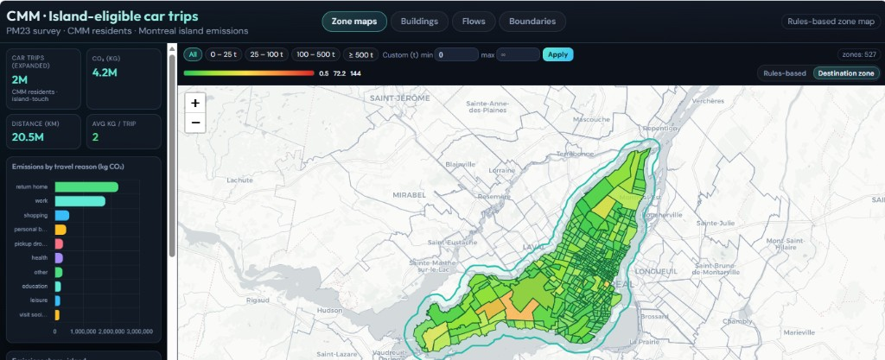

PM23 survey dashboard — installation, PostgreSQL restore, and operations guide.
Repository: github.com/atiyasehar/od_dashboard_export-main
This bundle is self-contained: static HTML/JS maps in the browser talk to a local Flask API, which reads pre-aggregated PostgreSQL tables.
Privacy Dump contains aggregates only — no person_key, no raw trip microdata.
Scope CMM residents · car trips touching Montréal island · PM23 survey weighting.
The home page is a single-page app (od-dashboard.html) with a fixed header and left sidebar. Map views load in iframes.

| Tab | URL | What it shows |
|---|---|---|
| Zone maps | /?view=zones | Island zone choropleth · emissions by travel zone |
| Buildings | /?view=buildings | Click a zone → building footprints & emissions |
| Flows | /?view=flows | Incoming OD flows by destination zone |
| Boundaries | /od-zones-boundary.html | Island / CMM boundary explorer |
psql, pg_restore (from PostgreSQL bin folder)psql).C:\Program Files\PostgreSQL\16\bin to system PATH if commands are not found.git clone https://github.com/atiyasehar/od_dashboard_export-main.git
cd od_dashboard_export-mainGitHub → Code → Download ZIP → extract → open PowerShell in that folder.
OneDrive The database dump is not in GitHub (~176 MB). It is shared separately on Microsoft OneDrive.
Download link: OneDrive — od_dashboard_tables.dump
od_dashboard_tables.dump from OneDrive (~176 MB).data\db inside the project if it does not exist.data\db\od_dashboard_tables.dump.The dump is too large for Git. Only the empty data/db/ folder is in the repository.
data/db/ before restore.mkdir data\db
copy %USERPROFILE%\Downloads\od_dashboard_tables.dump data\db\od_dashboard_tables.dump| Table | Approx. rows | Purpose |
|---|---|---|
zone_emissions_od10 | 938 | Zone choropleth totals |
building_emissions_od10 | 50,059 | Per-building aggregates |
buildings_footprint | 927,307 | Building polygons |
trips_route_emissions | 116,929 | Route-level trip stats |
zone_incoming_flows_od10 | 99,436 | OD flow lines |
| Zone geometries (PostGIS) | 1,074 | Choropleth polygons |
zone_flow_anchors_od10 | 1,074 | Flow map anchors |
zone_emissions_categories_od10 | 10 | Sidebar chart categories |
In pgAdmin, right-click Databases → Create → Database…
od_dashboardpostgres (or your admin user)public schema and PostGISOpen Query Tool on od_dashboard and run:
DROP SCHEMA IF EXISTS public CASCADE;
CREATE SCHEMA public;
GRANT ALL ON SCHEMA public TO postgres;
GRANT ALL ON SCHEMA public TO public;
CREATE EXTENSION IF NOT EXISTS postgis WITH SCHEMA public;od_dashboard → Restore…data\db\od_dashboard_tables.dump| Section | Option | Setting |
|---|---|---|
| Sections | Pre-data, Post-data, Data | On |
| Type of objects | Only data, Only schema | Off |
| Do not save | Owner, Privileges | On |
| Do not save | Tablespaces, Comments, Publications, Subscriptions, Security labels, Table access methods | Off |
Click Restore. Tables land in schema public.
pip install -r requirements.txt
python scripts/bundle_od_dashboard.py unpack --bundle-dir . --dbname od_dashboardConnection host, port, user, and password are taken from your normal PostgreSQL setup (PGHOST, PGPORT, PGUSER, PGPASSWORD, or libpq defaults) — only the database name is fixed here.
psql -d od_dashboard -c "CREATE EXTENSION IF NOT EXISTS postgis;"
pg_restore -d od_dashboard --no-owner --no-acl --clean --if-exists ^
data\db\od_dashboard_tables.dump✓ Verify (8 tables in public):
SELECT table_schema, table_name FROM information_schema.tables
WHERE table_schema = 'public'
AND table_name IN (
'popgen_zones_geom','zone_emissions_od10','zone_incoming_flows_od10',
'zone_flow_anchors_od10','zone_emissions_categories_od10',
'building_emissions_od10','buildings_footprint','trips_route_emissions'
)
ORDER BY table_name;cd path\to\od_dashboard_export-main
python -m venv .venv
.venv\Scripts\activate
pip install -r requirements.txtPackages: Flask, flask-cors, psycopg2-binary, SQLAlchemy (for unpack). Full machine snapshot: requirements-lock.txt.
Local (default) — app at site root, API under /api:
python scripts/run_dashboard.py --bundle-root . --db-name od_dashboardOther PostgreSQL settings use your environment or standard libpq defaults. Run python scripts/run_dashboard.py --help for all flags.
| Flag | Suggested value | Description |
|---|---|---|
--db-name | od_dashboard | PostgreSQL database (create in pgAdmin first) |
--bundle-root | . | Folder with dashboard/ + data/ |
--url-prefix | (empty) | Subpath when behind a reverse proxy (see below) |
--api-prefix | /api | API route prefix; use /od-dashboard-api if /api is taken |
--show-boundary-button | true | Set false to hide the Boundaries nav link |
When the dashboard is served under a subpath and another app already uses /api, pass mount prefixes at startup. The server injects them into assets/dashboard-config.js so HTML links and API calls stay correct (including browser Back/forward).
python scripts/run_dashboard.py --bundle-root . --db-name od_dashboard ^
--url-prefix /montreal-traffic-emissions-dashboard ^
--api-prefix /od-dashboard-api ^
--show-boundary-button falseEnvironment variable equivalents: DASH_URL_PREFIX, DASH_API_PREFIX, DASH_SHOW_BOUNDARY_BUTTON.
Example URLs (Concordia NGCI):
https://ngci.encs.concordia.ca/montreal-traffic-emissions-dashboard/https://ngci.encs.concordia.ca/montreal-traffic-emissions-dashboard/od-dashboard-api/healthThe health response includes a deploy object confirming url_prefix, api_prefix, and show_boundary_button.
Kill stale server if port 5051 is stuck on old code:
Get-NetTCPConnection -LocalPort 5051 -ErrorAction SilentlyContinue |
ForEach-Object { Stop-Process -Id $_.OwningProcess -Force }"ok": true, "schema": "public".http://YOUR_IP:5051/ (Windows Firewall may prompt)./api/health response.Paths below use the default /api prefix. With --api-prefix /od-dashboard-api, prepend that instead (and include --url-prefix when mounted under a subpath).
| Endpoint | Purpose |
|---|---|
GET /api/health | Server + DB connectivity check (includes deploy settings) |
GET /api/od/bootstrap | KPIs + sidebar charts data |
GET /api/od/zone_maps | Zone choropleth GeoJSON |
GET /api/od/building_map | Buildings for selected zone |
GET /api/od/flows | Incoming flows for destination zone |
od_dashboard.pg_restore not found — Add PostgreSQL bin to PATH.